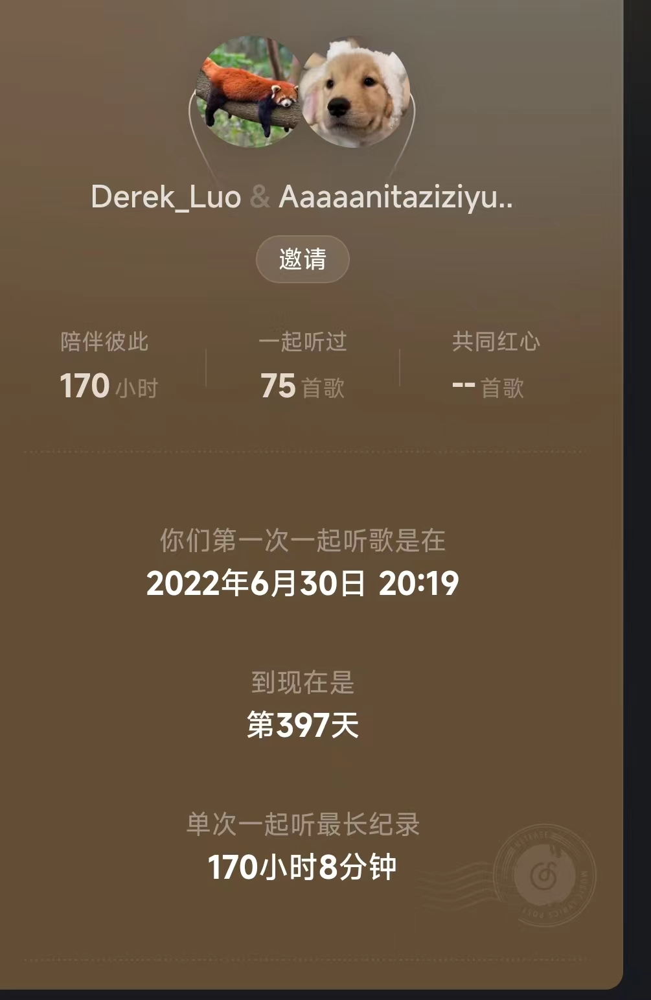
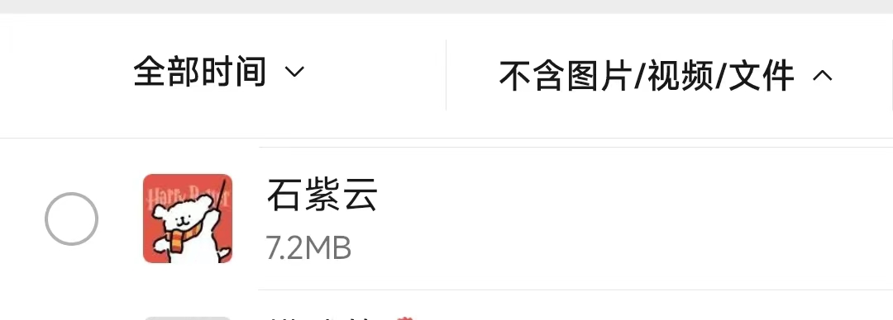

给 石紫云 的一封信
音乐
注意调整音量
由于浏览器限制，音乐可能不可自动播放，请手动播放
前言
好像真的是我第一次写信。
我不太会写东西,写的不好,见谅。(我真的尽力在写好了😵)
写这个网页花了半个多小时,但是信的内容写了3个小时。。。我也觉得很离谱,三个小时就写了这么点😓
感觉写信比较正式,不像平常聊天一样轻松,而且我记性也不好,所以时间主要费在改来改去和回忆上了……😑
其实我感觉这东西应该一年前写给你,但是那时候没想到这么做,也没时间这么做。
第一部分 回忆录
回想初中三年。初一时和你不怎么熟悉,基本没说过几句话。
初二上学期的某天,你加了我的微信。哦对,你是来要物理作业的。😅
最开始那会儿就一直发表情包斗图😕
后来疫情上网课,经常懒得听课就聊天,总之就是聊多了就熟悉了,就成了朋友。
那时候经常互相要个作业,上课聊天啥的。所以初二上网课是初中三年最快乐的时光。
反正那时候是啥都聊。从吐槽老师留作业多上课无聊到喜欢猫还是喜欢狗
还有就是某次期中考试还有生地一模,咱俩也对答案,还好没人发现😀
再往后到了假期,也是一直在聊天聊天。
还有一次整了个网易云的一起听,然后没关,就开了170个小时😏
话说你转学也整的太突然了吧之前根本没听你提过。。。😓
第二部分 好朋友
我真的把你当成很好的朋友
你转学时,我确实郁闷了一阵（少了个聊天的人真的很无聊）
但请不要误会,我不喜欢你,也没喜欢过你,从始至终都是把你当朋友的（我可对早恋没兴趣）
第三部分 总结
总的来说
挺奇怪的,似乎好像也没啥印象深刻的事,我对你的回忆主要好像就是聊天😓
虽然跟你面对面没说过几句话
这还只是2022年8月之后的聊天记录（之前我手贱清过一次聊天记录,之前的应该更多）
但是,你应该是我聊天最多的朋友。自然也是我最好的朋友
好吧,写的差不多了,该说的都说了。
感谢你读到了这里,也感谢你陪我度过了欢乐的初中三年时光（其实是两年😐）